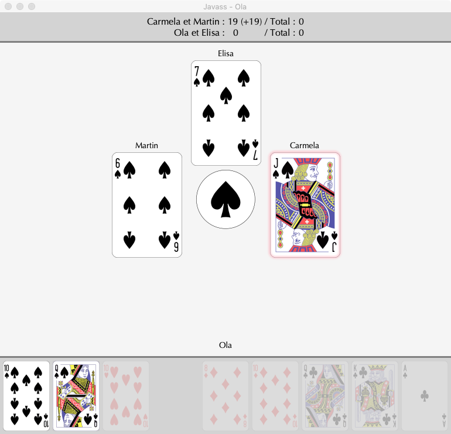
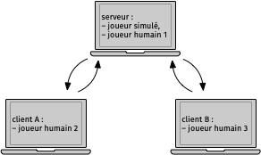

A game of Jass in Java
Abstract
The goal of this project, named Javass, is to write a program to play a variant of the famous game of Jass. Jass is a very popular card game in Switzerland - where it is often referred to as the national sport - and in other neighboring countries.
There are many variants of Jass, so here are the rules used in this variant.
The Jass is played with four players, divided into two teams of two and placed around a table with teammates facing eachother, i.e. so that each player is surrounded by the two opposing players. The players use a deck of 36 cards, each with a suit and a rank that identifies it. There are four different suits - spades (♠), hearts (♥), diamonds (♦) and clubs (♣) - and nine ranks - 6, 7, 8, 9, 10, jack, queen, king and ace.
A game is played in a number of turns, until a team has accumulated a certain number of points - usually 1000 - at which point it is declared the winner.
At the beginning of each round, the 36 cards of the game are randomly distributed to the players, who receive 9 cards each, which they do not show to anyone. One of the four suits is designated as the trump suit, which gives the cards of that suit special characteristics: they are stronger than those of the other suits, and can score more points.
A game turn consists of a succession of 9 folds. At the beginning of each fold, a determined player places a card from his or her hand on the table. The following players do the same, in order, but following certain rules. Basically, a player can either follow by playing a card of the same suit as the first, or cut by playing a trump card.
When all players have put down a card, the team that put down the strongest card wins the trick, and all the points of the cards that make it up. The player with the strongest card is the one who places the first card of the next fa-download.
The image below shows the second fold of the first round of a Jass game. It is up to the human player (Ola) to play and, according to the rules, he can only put down his ten or queen of spades, which is why these cards are highlighted.

Figure 1 : A game of Ja(va)ss in progress
Overview
Javass allows a human player to compete against three other players in a Jass game. Each of these three players can be either :
- a player simulated by the computer/li>
- a human player playing on his own computer.
In order for several human players to play together in the same game, it is necessary that their computers are connected to the same network. To enable this network game, Javass is composed of two distinct parts, named the server and the client.
The server is the part of the program that arbitrates the Jass game and is in charge of dealing the cards, memorizing the points obtained by the teams, etc. The server is the part of the program that arbitrates the Jass game and is in charge of distributing the cards, memorizing the points obtained by the teams, etc. It also manages the simulated player(s), if any, and the graphical interface of the human player playing on the computer it is running on.
The client is the part of the program that manages the graphical user interface of the human player(s) playing on remote computers, each copy of the client being responsible for only one player.
For example, in a game between a team composed of two human players and another team composed of a human player and a simulated player, Javass runs on a total of three computers :
- a computer runs the server, which manages the whole game, the simulated player and the interface with a first human player,
- the other two computers each run a copy of the client, which is in charge of the interface of their associated human player.
This situation is presented graphically in the figure below, where the arrows represent the communication between the different computers.

Figure 2 : Organization of a Jass game with three human players